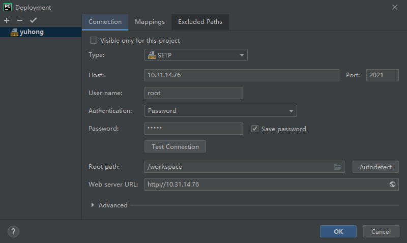
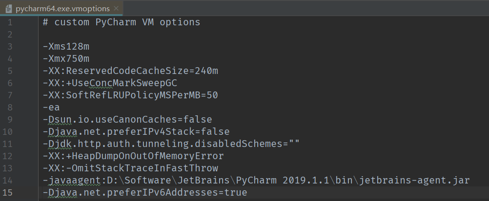
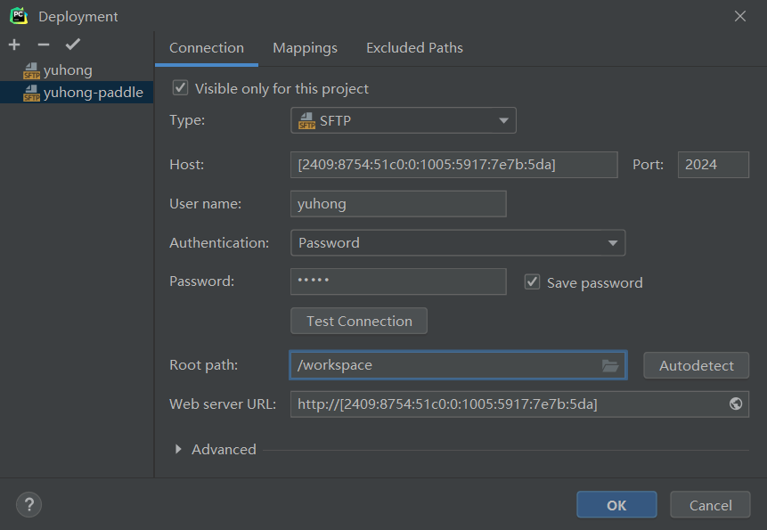
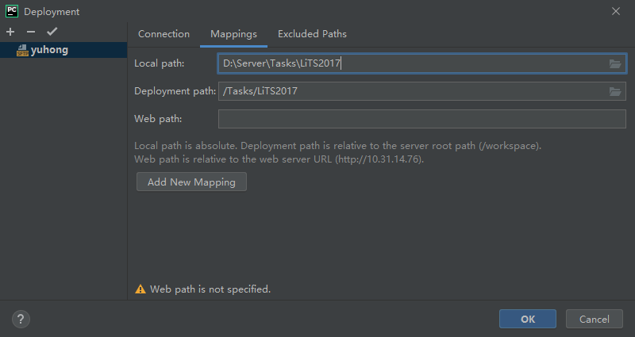
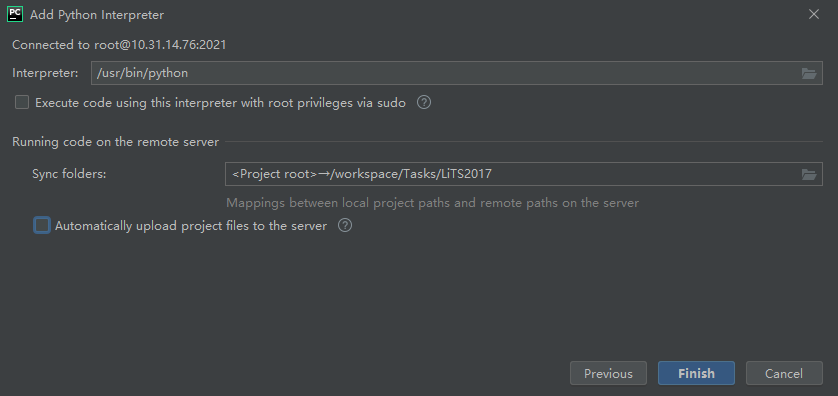
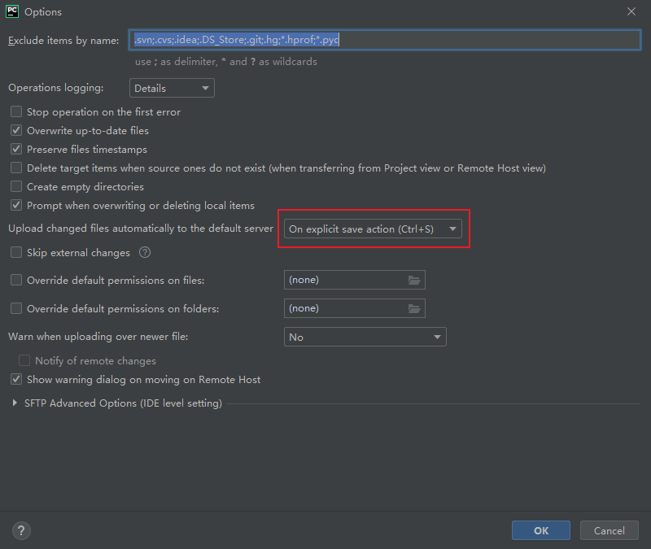

Docker
title: Docker
date: 2022-04-26 10:50:36
tags:
Docker教程
1 概述
Docker 是 Docker 公司的开源项目，使用 Google 公司推出的 Go 语言开发的，并于 2013 年 3 月以 Apache 2.0 授权协议开源，主要项目代码在 GitHub 上进行维护，大概在2017年4月份左右Docker项目改名为Moby，可以在Github搜索Moby找到这个项目。
Docker的内核建立在LXC(Linux Container)之上，作为容器的一种，同传统的虚拟机比起来，容器内的应用/进程直接运行在宿主机的内核上，容器没有自己的内核，所以容器更加轻量，运行效率也更高。同传统的虚拟机相比：Docker具有以下优点：
- 更高效的资源利用
- 快速启动时间
- 一致的运行环境
- 持续交付和部署
- 轻松迁移
- 轻松维护和扩展
2 Docker概念
- 镜像 Image
Docker镜像是一个特殊的文件系统，除了提供容器运行时所需的程序、库、资源、配置等文件外，还包含了一些为运行时准备的一些配置参数(如匿名卷、环境变量、用户等)。镜像不包含任何动态数据，其内容在构建之后也不会被改变。 - 容器 Container
Docker容器是Docker镜像的实例，镜像启动后可生成一个Docker实例，它可以被开始、停止、删除、每个容器都是互相隔离的，保证安全的平台，可以把容器看做是要给简易版的linux环境(包括root用户权限、镜像空间、用户空间和网络空间等)和运行在其中的应用程序当然也可以将Docker实例保存为一个镜像，供其他用户使用。 - 仓库 Repository
Docker仓库是保存Docker镜像的地方，Docker的默认镜像仓库是在hub.docker.com，但用户只能在官网创建一个private项目，有些组织并不希望自己的镜像成为public项目(比如打包了云源码)，这时用户可以使用registry构建自己的仓库。
3 Docker常用命令
3.1 Docker安装
3.1.1 Linux安装
接下来将基于Ubuntu20.04操作系统讲解Docker命令。
3.1.1.1 Docker安装
第一种 安装docker
安装docker
1
sudo apt install docker安装nvidia-docker
nvidia-docker是一个可以使用GPU的docker，它在docker上做了一层封装，通过nvidia-docker-plugin，然后调用到docker上，其最终实现的还是在docker的启动命令上携带一些必要的参数。因此在安装nvidia-docker之前，还是需要安装docker的。
docker一般都是使用基于CPU的应用，而如果是GPU的话，就需要安装特有的硬件环境，比如需要安装nvidia driver，所以docker容器并不直接支持Nvidia GPU。为了使docker image能很便利的使用Nvidia GPU，从而产生了nvidia-docker，由它来制作nvidia driver的image，这就要求在目标机器上启动container时，确保字符设备以及驱动文件已经被挂载。
1
sudo apt install -y nvidia-docker2
第二种 安装docker.io(推荐)
Docker19版本更新了GPU驱动使用参数，下面介绍具体的安装方法。
docker-ce与docker-io的区别
docker-ce是由docker团队认证并维护的一个社区版发行包，docker.io是ubuntu团队维护的一个包。由于之前ubuntu团队有很长一段时间没有维护docker的版本，导致有一段时间docker.io的版本还停留在远古版本。后来ubuntu版本重新开始维护，版本继续送代，截止2021-05-14日，版本已经更新到Docker version 20.10.2。两者使用相同的包管理，docker-ce是所有依赖包由docker团队管理，可以保证docker运行的稳定，适合作为纯docker管理的生产环境，即整个系统只有一个docker在跑，剩下所有应用都通过发布docker的容器来部署。docker-io的依赖包则是由ubuntu统一管理，更符合包管理的理念，也更规范，可以尽可能的保证系统和多个软件的运行稳定，适合作为多软件协同运行的服务器和个人桌面使用。Docker目前是一个被广泛使用的工具，ubuntu再次停止维护的概率不大。所以除了纯docker环境，个人建议直接用docker.io。安装
docker.io1
2# Install Docker
sudo apt install docker.io在线安装nvidia-container-toolkit
首先配置package repositories
1
2
3
4
5
6
7# Get system version
distribution=$(. /etc/os-release;echo $ID$VERSION_ID)
# add public key
curl -s -L https://nvidia.github.io/nvidia-docker/gpgkey | sudo apt-key add -
# add source
curl -s -L https://nvidia.github.io/nvidia-docker/$distribution/nvidia-docker.list | sudo tee /etc/apt/sources.list.d/nvidia-docker.list
sudo apt-get update安装nvidia-container-toolkit
1
sudo apt-get install -y nvidia-container-toolkit
离线安装nvidia-container-toolkit
在有网络连接的设备上配置package repositories
1
2
3
4
5
6
7# Get system version
distribution=$(. /etc/os-release;echo $ID$VERSION_ID)
# add public key
curl -s -L https://nvidia.github.io/nvidia-docker/gpgkey | sudo apt-key add -
# add source
curl -s -L https://nvidia.github.io/nvidia-docker/$distribution/nvidia-docker.list | sudo tee /etc/apt/sources.list.d/nvidia-docker.list
sudo apt-get update下载nvidia-container-toolkit套件
1
2
3
4
5apt download libnvidia-container1
apt download libnvidia-container-tools
apt download nvidia-container-toolkit
apt download nvidia-container-runtime
apt download nvidia-docker2安装nvidia-container-toolkit套件(以下顺序不能改变)
1
2
3
4
5dpkg -i libnvidia-container1_***.deb
dpkg -i libnvidia-container-tools_***.deb
dpkg -i nvidia-container-toolkit_***.deb
dpkg -i nvidia-container-runtime_***.deb
dpkg -i nvidia-docker2_***.deb
安装完成后重启Docker
1
sudo systemctl restart docker使用该版本Docker创建容器时使用
--gpus参数指定使用的GPU编号：1
sudo docker run -it --gpus all imagename
3.1.1.2 加入Docker用户组
创建docker用户组
1
sudo groupadd docker将用户加入docker用户组
1
sudo usermod -aG docker ${USER}重启docker服务
1
sudo systemctl restart docker切换或者退出当前账户，再重新登入
1
2su root
su ${USER}添加访问和执行权限(普通用户可不加
sudo使用docker)1
sudo chmod a+rw /var/run/docker.sock
3.1.1.3 查看Docker安装信息
使用docker info查看 Docker 系统信息，包括镜像和容器数。
语法：
1 | |
示例：
查看Docker版本信息。
1 | |
3.1.1.4 查看Docker版本
使用docker version查看Docker的版本信息。
语法：
1 | |
常用Options：
- -f：指定返回值的模板文件
示例：
查看Docker版本信息。
1 | |
3.1.1.5 卸载Docker
- 确定您拥有什么已安装的软件包
1 | |
- 删除软件包服务
1 | |
- 删除主机上的映像，容器，卷或用户创建的配置文件
1
2
3
4sudo rm -rf /var/lib/docker /etc/docker
sudo rm /etc/apparmor.d/docker
sudo groupdel docker
sudo rm -rf /var/run/docker.sock
3.1.2 Windows安装
3.1.2.1 启动依赖环境
Hyper-V
以管理员身份运行Powershell：
1
Enable-WindowsOptionalFeature -Online -FeatureName Microsoft-Hyper-V -All在BIOS中开启Virtualization
不同的主板设置不同，基本位于Advanced->CPU设置中。
WSL2
- 必须运行Windows10版本2004及更高版本(内部版本19041及更高版本)或Windows 11。
- Windows11中默认安装了WSL内核，如果没有可手动安装。
- 以管理员身份运行Powershell： 此命令将启用所需的可选组件，下载最新的Linux内核，将WSL2设置为默认值，并安装 Linux发行版(默认安装Ubuntu)。
1
wsl --install
3.1.2.2 安装Docker Desktop for Windows
下载安装包
进入Dokcer官网下载地址，并下载Windows的版本Docker，如果你还没有登录，会要求注册登录。安装
双击安装文件并根据指引完成安装。
3.1.2.3 下载Linux内核更新包
启动Docker Desktop时可能会要求更新WSL内核版本，在WSL文档中获取适用于x64计算机的WSL2 Linux内核更新包。完成安装后重启Docker即可。
3.1.2.4 注意事项
- docker运行出现错误
error during connect: This error may indicate that the docker daemon is not running.:- powershell进入目录”C:\Program Files\Docker\Docker”
1
cd "C:\Program Files\Docker\Docker" - 执行以下命令
1
./DockerCli.exe -SwitchDaemon
- powershell进入目录”C:\Program Files\Docker\Docker”
3.2 镜像命令
3.2.1 登入/登出(login/logout)
使用docker login登陆到一个Docker镜像仓库，如果未指定镜像仓库地址，默认为官方仓库 Docker Hub；
使用docker logout登出一个Docker镜像仓库，如果未指定镜像仓库地址，默认为官方仓库 Docker Hub。
语法：
1 | |
1 | |
常用Options：
- -u：登陆的用户名
- -p：登陆的密码
示例：
登陆到Docker Hub。
1 | |
登出Docker Hub。
1 | |
3.2.2 查找镜像(search)
使用docker search从Docker Hub查找镜像。
语法：
1 | |
常用Options：
- –automated：只列出 automated build类型的镜像
- –no-trunc：显示完整的镜像描述
- -s：列出收藏数不小于指定值的镜像
查找到的镜像列表包含：
- NAME 镜像名称
- DESCRIPTION 镜像描述
- STARS 星标数量
- OFFICIAL 是否为官方镜像
- AUTOMATED 是否是自动构建的镜像
示例：
从Docker Hub查找所有镜像名包含java，并且收藏数大于10的镜像。
1 | |
3.2.3 拉取镜像(pull)
使用docker pull从镜像仓库中拉取或者更新指定镜像。
语法：
1 | |
常用Options：
- -a：拉取所有tagged镜像
- –disable-content-trust：忽略镜像的校验，默认开启
示例：
从Docker Hub下载java最新版镜像。
1 | |
从Docker Hub下载Repository为java的所有镜像。
1 | |
3.2.4 上传镜像(push)
使用docker push将本地的镜像上传到镜像仓库，要先登陆到镜像仓库
语法：
1 | |
常用Options：
- –disable-content-trust：忽略镜像的校验，默认开启
示例：
上传本地镜像myapache:v1到镜像仓库中。
1 | |
3.2.5 查看镜像(images)
使用docker images查看本地存在的镜像。
语法：
1 | |
常用Options：
- -a：列出本地所有的镜像(含中间映像层，默认情况下，过滤掉中间映像层)
- –digests：显示镜像的摘要信息
- -f：显示满足条件的镜像
- –format：指定返回值的模板文件
- –no-trunc：显示完整的镜像信息
- -q：只显示镜像ID
示例：
1 | |
列出的镜像列表包含以下信息：
- REPOSITORY 镜像来自于哪个仓库，比如ubuntu
- **TAG ** 镜像的标记，比如 14.04
- IMAGE ID 镜像的ID号(唯一)
- CREATED 镜像创建时间
- VIRTUAL SIZE 镜像大小
3.2.6 载入镜像(load)
使用 docker load对于本地其他方式获得的镜像进行导入。
语法：
1 | |
常用Options：
- –input ， -i：指定导入的文件，代替 STDIN。
- –quiet ， -q：精简输出信息。
示例：
1 | |
3.2.7 存出镜像(save)
可以使用docker save将指定镜像保存成tar归档文件。
语法：
1 | |
常用Options：
- -o：输出到的文件。
示例：
1 | |
3.2.8 删除镜像(rmi)
使用docker rmi删除镜像。
语法：
1 | |
常用Options：
- -f：强制删除
- –no-prune：不移除该镜像的过程镜像，默认移除
示例：
强制删除本地镜像。
1 | |
注意：
docker rm命令是删除容器，而docker rmi命令是删除镜像(remove image)。- 当出现同一个Image ID对应多个Repository:Tag时，使用
docker rmi Repository:Tag可以删除对应的镜像，此时会显示Untagged: Repository:Tag；而加上参数-f，使用docker rmi -f ImageID会删除对应Image ID的所有镜像。
3.2.9 创建Dockerfile
我们可以使用docker build来创建一个新的镜像。首先需要创建一个Dockerfile，包含一些如何创建镜像的指令。
新建一个目录和一个Dockerfile
1 | |
在Dockerfile中写入创建信息，Dockerfile 中每一条指令都创建镜像的一层，例如：
1 | |
Dockerfile 基本的语法是：
#注释FROM告诉Docker使用哪个镜像作为基础MAINTAINER维护者信息RUN该指令会在创建中运行，比如安装一个软件包，在这里使用apt-get来安装了一些软件
3.2.10 从Dockerfile创建镜像(build)
对于已有的Dockerfile，可以使用docker build来生成镜像。
语法：
1 | |
常用Options：
- -f：指定要使用的Dockerfile路径
- -t / -tag：镜像的名字及标签，通常 name:tag 或者 name 格式；可以在一次构建中为一个镜像设置多个标签
- –build-arg=[]：设置镜像创建时的变量
- –cpu-shares：设置 cpu 使用权重
- –cpu-period：限制 CPU CFS周期
- –cpu-quota：限制 CPU CFS配额
- –cpuset-cpus：指定使用的CPU id
- –cpuset-mems：指定使用的内存 id
- –disable-content-trust：忽略校验，默认开启
- –force-rm：设置镜像过程中删除中间容器
- –isolation：使用容器隔离技术
- –label=[]：设置镜像使用的元数据
- -m：设置内存最大值
- –memory-swap：设置Swap的最大值为内存+swap，”-1”表示不限swap
- –no-cache：创建镜像的过程不使用缓存
- –pull：尝试去更新镜像的新版本
- –quiet， -q：安静模式，成功后只输出镜像ID
- –rm：设置镜像成功后删除中间容器
- –shm-size：设置/dev/shm的大小，默认值是64M
- –ulimit：Ulimit配置
- –squash：将 Dockerfile 中所有的操作压缩为一层
- –network: 默认 default。在构建期间设置RUN指令的网络模式
示例：
使用当前目录(用.表示)的 Dockerfile 创建镜像，标签为 walker/ubuntu:v1。
1 | |
使用URL github.com/creack/docker-firefox 的 Dockerfile 创建镜像。
1 | |
也可以通过-f指定Dockerfile文件的位置。
1 | |
注意：
在使用
docker build命令时，Docker client会发送执行命令时同级目录下的所有文件到Docker daemon，因此建议cd到Dockerfile所在路径，并保证该路径下无其他大文件。
3.2.11 标记镜像(tag)
使用docker tag标记本地镜像，将其归入某一仓库。
语法：
1 | |
示例：
将镜像ubuntu:15.10标记为 walker/ubuntu:v3 镜像。
1 | |
3.2.12 镜像历史(history)
使用docker history查看指定镜像的创建历史。
语法：
1 | |
常用Options：
- -H：以可读的格式打印镜像大小和日期，默认为true
- –no-trunc：显示完整的提交记录
- -q：仅列出提交记录ID
示例：
查看本地镜像walker/ubuntu:v3的创建历史。
1 | |
3.2.13 导入镜像(import)
使用docker import从归档文件中创建镜像。
语法：
1 | |
常用Options：
- -c：应用docker 指令创建镜像
- -m：提交时的说明文字
示例：
从镜像归档文件my_ubuntu_v3.tar创建镜像，命名为walker/ubuntu:v4。
1 | |
注意：
import与[export](# 3.3.3 导出容器(export))是一对命令，export用于从容器导出得到归档文件；而import用于导入归档文件获得镜像 。save与load是一对命令，save用于将镜像到处得到归档文件；而load用于导入归档文件获得镜像。- 这四个命令中只有
export的操作对象是容器。
3.3 容器操作
3.3.1 列出容器(ps)
使用docker ps列出容器。
语法：
1 | |
常用Options：
- -a：显示所有的容器，包括未运行的
- -f：根据条件过滤显示的内容
- –format：指定返回值的模板文件
- -l：显示最近创建的容器
- -n：列出最近创建的n个容器
- –no-trunc：不截断输出
- -q：静默模式，只显示容器编号
- -s：显示总的文件大小
示例：
列出所有在运行的容器信息。
1 | |
3.3.2 连接进入容器(attach)
使用docker attach连接到正在运行中的容器。
语法：
1 | |
注意：
要attach上去的容器必须正在运行，可以同时连接上同一个container来共享屏幕(与screen命令的attach类似)。官方文档中说attach后可以通过Ctrl+C来detach，但实际上经过我的测试，如果container当前在运行bash，Ctrl+C自然是当前行的输入，没有退出；如果container当前正在前台运行进程，如输出nginx的access.log日志，Ctrl+C不仅会导致退出容器，而且还stop了。这不是我们想要的，detach的意思按理应该是脱离容器终端，但容器依然运行。好在attach是可以带上–sig-proxy=false来确保Ctrl+D或Ctrl+C不会关闭容器。
示例：
容器mynginx将访问日志指到标准输出，连接到容器查看访问信息。
1 | |
3.3.3 导出容器(export)
使用docker export将文件系统作为一个tar归档文件导出。
语法：
1 | |
常用Options：
- -o：将输入内容写到文件。
示例：
将id为a404c6c174a2的容器按日期保存为tar文件。
1 | |
3.3.4 获取元数据(inspect)
使用docker inspect获取容器/镜像的元数据。
语法：
1 | |
常用Options：
- -f：指定返回值的模板文件
- -s：显示总的文件大小
- –type：为指定类型返回JSON
示例：
获取镜像mysql:5.6的元信息。
1 | |
3.3.5 容器进程(top)
使用docker top查看容器中运行的进程信息，支持ps命令参数。
语法：
1 | |
注意：
容器运行时不一定有
/bin/bash终端来交互执行top命令，而且容器还不一定有top命令，可以使用docker top来实现查看container中正在运行的进程。
示例：
查看容器mymysql的进程信息。
1 | |
3.3.6 容器事件(events)
使用docker events从服务器获取实时事件。
语法：
1 | |
常用Options：
- -f ：根据条件过滤事件；
- –since ：从指定的时间戳后显示所有事件;
- –until ：流水时间显示到指定的时间为止；
示例：
显示docker 镜像为mysql:5.6 2016年7月1日后的相关事件。
1 | |
注意：
如果指定的时间是到秒级的，需要将时间转成时间戳。如果时间为日期的话，可以直接使用，如
--since="2016-07-01。
3.3.7 容器日志(logs)
使用docker logs获取容器的日志。
语法：
1 | |
常用Options：
- -f： 跟踪日志输出
- –since：显示某个开始时间的所有日志
- -t： 显示时间戳
- –tail：仅列出最新N条容器日志
示例：
跟踪查看容器mynginx的日志输出。
1 | |
查看容器mynginx从2016年7月1日后的最新10条日志。
1 | |
3.3.8 阻塞容器(wait)
使用docker wait阻塞运行直到容器停止，然后打印出它的退出代码。
语法：
1 | |
示例：
跟踪查看容器mynginx的日志输出。
1 | |
3.3.9 容器端口(port)
使用docker port列出指定的容器的端口映射，或者查找将PRIVATE_PORT NAT到面向公众的端口。
语法：
1 | |
示例：
查看容器mynginx的端口映射情况。
1 | |
3.3.10 容器提交(commit)
使用docker commit从容器创建一个新的镜像。
语法：
1 | |
常用Options：
- -a：提交的镜像作者；
- -c：使用Dockerfile指令来创建镜像；
- -m：提交时的说明文字；
- -p：在commit时，将容器暂停。
yuhong示例：
将容器a404c6c174a2保存为新的镜像，并添加提交人信息和说明信息。
1 | |
3.3.11 容器数据拷贝(cp)
使用docker cp进行容器与主机之间的数据拷贝。
语法：
1 | |
1 | |
常用Options：
- -L：保持源目标中的链接
示例：
将主机/www/walker目录拷贝到容器96f7f14e99ab的/www目录下。
1 | |
将主机/www/walker目录拷贝到容器96f7f14e99ab中，目录重命名为www。
1 | |
将容器96f7f14e99ab的/www目录拷贝到主机的/tmp目录中。
1 | |
3.3.12 容器文件结构(diff)
使用docker diff检查容器里文件结构的更改。
语法：
1 | |
示例：
查看容器mymysql的文件结构更改。
1 | |
3.4 容器生命周期管理
3.4.1 创建容器(create)
使用docker create创建一个新的容器但不启动它。
语法：
1 | |
示例：
使用docker镜像nginx:latest创建一个容器，并将容器命名为mywalker
1 | |
3.4.2 运行容器(run)
使用docker run创建一个新的容器并运行一个命令。
语法：
1 | |
常用Options：
| option | descriptipon |
|---|---|
| -a， –attach=[] | 指定标准输入输出内容类型，可选 STDIN/STDOUT/STDERR 三项 |
| –add-host=[] | Add a custom host-to-IP mapping (host:ip) |
| –blkio-weight=0 | Block IO (relative weight)， between 10 and 1000 |
| –cpu-shares=0 | CPU shares (relative weight) |
| –cap-add=[] | Add Linux capabilities |
| –cap-drop=[] | Drop Linux capabilities |
| –cgroup-parent= | Optional parent cgroup for the container |
| –cidfile= | Write the container ID to the file |
| –cpu-period=0 | Limit CPU CFS (Completely Fair Scheduler) period |
| –cpu-quota=0 | Limit CPU CFS (Completely Fair Scheduler) quota |
| –cpuset-cpus= | CPUs in which to allow execution (0-3， 0，1) |
| –cpuset-mems= | MEMs in which to allow execution (0-3， 0，1) |
| -d， –detach=false | 后台运行容器，并返回容器ID |
| –device=[] | Add a host device to the container |
| –disable-content-trust=true | Skip image verification |
| –dns=[] | 指定容器使用的DNS服务器，默认和宿主一致 |
| –dns-opt=[] | Set DNS options |
| –dns-search=[] | 指定容器DNS搜索域名，默认和宿主一致 |
| -e， –env=[] | 设置环境变量 |
| –entrypoint= | Overwrite the default ENTRYPOINT of the image |
| –env-file=[] | 从指定文件读入环境变量 |
| –expose=[] | 开放一个端口或一组端口 |
| –gpu | 使用GPU启动 |
| –group-add=[] | Add additional groups to join |
| -h， –hostname= | 指定容器的hostname |
| –help=false | Print usage |
| -i， –interactive=false | 以交互模式运行容器，通常与-t一起同时使用 |
| –ipc= | IPC namespace to use |
| –kernel-memory= | Kernel memory limit |
| -l， –label=[] | Set meta data on a container |
| –label-file=[] | Read in a line delimited file of labels |
| –link=[] | 添加链接到另一个容器 |
| –log-driver= | Logging driver for container |
| –log-opt=[] | Log driver options |
| –lxc-conf=[] | Add custom lxc options |
| -m， –memory= | Memory limit |
| –mac-address= | Container MAC address (e.g. 92:d0:c6:0a:29:33) |
| –memory-reservation= | Memory soft limit |
| –memory-swap= | Total memory (memory + swap)， ‘-1’ to disable swap |
| –memory-swappiness=-1 | Tuning container memory swappiness (0 to 100) |
| –name= | 为容器指定一个名称 |
| –net=default | 指定容器的网络连接类型，支持 bridge/host/none/container: 四种类型 |
| –oom-kill-disable=false | Disable OOM Killer |
| -P， –publish-all=false | Publish all exposed ports to random ports |
| -p， –publish=[] | 指定端口映射，格式为：主机(宿主)端口:容器端口 |
| –pid= | PID namespace to use |
| –privileged=false | Give extended privileges to this container |
| –read-only=false | Mount the container’s root filesystem as read only |
| –restart=no | Restart policy to apply when a container exits |
| –rm=false | Automatically remove the container when it exits |
| –runtime=nvidia | 在安装nvidia-docker的情况下，使用该参数可以在docker中使用GPU及Nvidia驱动 |
| –security-opt=[] | Security Options |
| –shm-size= | 指定容器的shared memory |
| –sig-proxy=true | Proxy received signals to the process |
| –stop-signal=SIGTERM | Signal to stop a container， SIGTERM by default |
| -t， –tty=false | 为容器重新分配一个伪输入终端 |
| -u， –user= | Username or UID (format: <name |
| –ulimit=[] | Ulimit options |
| –uts= | UTS namespace to use |
| -v， –volume=[] | 挂载目录 |
| –volume-driver= | Optional volume driver for the container |
| –volumes-from=[] | Mount volumes from the specified container(s) |
| -w， –workdir= | Working directory inside the container |
示例：
使用镜像nginx:latest以交互模式启动一个容器，命名为mynginx，使用GPU启动，同时将宿主机/data1/walker挂载到docker的/share文件夹下，将宿主机2333端口映射到容器的22端口，为容器分配2G共享内存(Shared Memory)
1 | |
使用docker镜像nginx:latest以后台模式启动一个容器，并将容器命名为mynginx。
1 | |
使用镜像nginx:latest以后台模式启动一个容器，并将容器的80端口映射到主机随机端口。
1 | |
使用镜像 nginx:latest，以后台模式启动一个容器，将容器的 80 端口映射到主机的 80 端口，主机的目录 /data 映射到容器的 /data。
1 | |
绑定容器的 8080 端口，并将其映射到本地主机 127.0.0.1 的 80 端口上。
1 | |
3.4.3 容器启动/停止/重启(start/stop/restart)
使用docker start启动一个或多个已经被停止的容器；
使用docker stop停止一个运行中的容器；
使用docker restart重启容器。
语法：
1 | |
1 | |
1 | |
示例：
启动已被停止的容器mywalker。
1 | |
停止运行中的容器mywalker。
1 | |
重启容器mywalker。
1 | |
3.4.4 容器强制停止(kill)
使用docker kill杀掉一个运行中的容器。
语法：
1 | |
常用Options：
- -s：向容器发送一个信号
示例：
杀掉运行中的容器mynginx。
1 | |
注意：
docker kill命令不管容器同不同意，执行强行终止；docker stop命令首先给容器发送一个SIGTERM信号，让容器做一些退出前必须的保护性、安全性操作，然后让容器自动停止运行，这是一种更为优雅的退出方式；如果在一段时间内，容器还是没有停止，再考虑使用docker kill命令强行终止。
3.4.5 删除容器(rm)
使用docker rm删除一个或多个容器。
语法：
1 | |
常用Options：
- -f：通过 SIGKILL 信号强制删除一个运行中的容器
- -l：移除容器间的网络连接，而非容器本身
- -v：删除与容器关联的卷
示例：
强制删除容器 db01、db02。
1 | |
移除容器 nginx01 对容器 db01 的连接，连接名 db。
1 | |
删除容器 nginx01， 并删除容器挂载的数据卷。
1 | |
删除所有已经停止的容器。
1 | |
注意：
docker rm命令是删除容器，而docker rmi命令是删除镜像(remove image)。
3.4.6 容器暂停与恢复(pause/unpause)
使用docker pause暂停容器中所有的进程；
使用docker unpause恢复容器中所有的进程。
语法：
1 | |
1 | |
示例：
暂停数据库容器db01提供服务。
1 | |
恢复数据库容器db01提供服务。
1 | |
3.4.7 容器执行命令(exec)
使用docker exec在运行的容器中执行命令。
语法：
1 | |
常用Options：
- -d：分离模式: 在后台运行
- -i：即使没有附加也保持STDIN 打开
- -t：分配一个伪终端
示例：
在容器mynginx中以交互模式执行容器内/root/runoob.sh脚本。
1 | |
在容器 mynginx 中开启一个交互模式的终端。
1 | |
也可以通过docker ps命令查看已经在运行的容器，然后使用容器ID进入容器，再通过docker exec命令对指定的容器执行bash。
1 | |
3.5 Docker清理命令汇总
杀死所有正在运行的容器
1 | |
删除所有已经停止的容器
1 | |
删除所有未打dangling标签的镜像
1 | |
通过镜像的id来删除指定镜像
1 | |
删除所有镜像
1 | |
4 Docker仓库管理
仓库Repository是集中存放镜像的地方。以下介绍一下 Docker Hub。当然不止DockerHub，只是远程的服务商不一样，操作都是一样的。
4.1 Docker Hub
目前 Docker 官方维护了一个公共仓库Docker Hub。大部分需求都可以通过在 Docker Hub 中直接下载镜像来实现。
注册
在Docker Hub免费注册一个 Docker 账号。登录和退出
登录需要输入用户名和密码，使用[docker login(点击查看)](#3.2.1 登入/登出(login/logout))命令登录成功后，我们就可以从Docker Hub上拉取自己账号下的全部镜像。使用[docker logout(点击查看)](#3.2.1 登入/登出(login/logout))命令即可退出登录。拉取镜像
你可以通过[docker search](#3.2.2 查找镜像(search))命令来查找官方仓库中的镜像，并利用[docker pull](#3.2.3 拉取镜像(pull))命令来将它下载到本地。以 ubuntu 为关键词进行搜索：推送镜像
用户登录后，可以通过[docker push](#3.2.4 上传镜像(push))命令将自己的镜像推送到Docker Hub。
4.2 阿里云容器Hub
我们使用Docker的第一步，应该是获取一个官方的镜像，例如mysql、wordpress，基于这些基础镜像我们可以开发自己个性化的应用。我们可以使用Docker命令行工具来下载官方镜像。但是因为网络原因，我们下载一个300M的镜像需要很长的时间，甚至下载失败。可以通过设置镜像代理站点/加速器的方式来对下载加速。阿里云容器Hub服务提供了官方的镜像站点加速官方镜像的下载速度。在该网站登录可以获得加速器地址，格式为https://*****.mirror.aliyuncs.com。
当你下载安装的Docker Version不低于1.10时，建议直接通过daemon config进行配置。
使用配置文件 /etc/docker/daemon.json(没有时新建该文件)。
1 | |
然后重启Docker Daemon就可以了。
1 | |
5 docker网络模式
docker共有4种网络模式，其中自带3种网络模式：分别是bridge网络，host网络，none网络，可以使用以下命令查看。
1 | |
5.1 host网络
创建容器时，可以使用-net=host指定。
启动的容器如果指定了网络类型为host模式，那么新创建的容器不会创建自己的虚拟网卡，而是直接使用宿主机的网卡和IP地址，因此容器里面查看到的IP信息就是宿主机的信息，访问容器的时候直接使用宿主机IP:容器端口即可，不过容器的其它资源们比如文件系统，系统进程等还是和宿主机保持隔离。
此模式的网络性能最高，但是各容器之间端口不能相同(因为该模式直接使用的是宿主机的网络)，适用于运行容器端口比较固定的业务，比如Mysql，Redis等。
该模式也有一个缺点，容器内已经使用的端口就不能再用了，并且网络的隔离性不好。例如，当通过ssh的方式直接远程登陆至该容器内部时，端口号22已经被宿主机占用，此时需要修改容器内部ssh端口号，并通过宿主机IP:修改后的端口登录。
5.2 none模式
创建容器时，可以使用-net=none指定。
在使用none模式后，docker容器不会进行任何网络配置，其没有网卡，没有IP也没有路由，因此默认无法与外界通信，需要手动添加配置IP等，所以极少使用。这种类型的网络没有办法联网，封闭的网络能很好的保证容器的安全性。
5.3 bridge模式
docker的默认模式就是bridge模式，也是使用比较多的模式，此模式创建的容器会为每一个容器分配自己的网络IP等信息，并将容器连接到一个虚拟网桥与外界通信。
5.4 container模式
创建容器时，可以使用”-net=container:容器名称或容器ID”指定。
使用此模式创建的容器需指定和一个已经存在的容器共享一个网络，而不是和宿主机共享网络，换句话说，就是两个容器公用同一个IP地址。
新创建的容器不会创建自己的网卡也不会配置自己的IP，而是和一个已经存在的被指定的容器IP和端口范围，因此这个容器的端口不能和被指定的端口冲突，除了网络之外的文件系统，进程信息等仍然保持相互隔离，两个容器的进程可以通过lo网卡设备通信。
6 Docker-SSH远程调试
本章详细讲述使用Pycharm进行远程调试的方法。
6.1 远程服务器(Docker宿主机)SSH配置
确保宿主机正确安装openssh-server服务，默认端口22，可以自行修改。
6.2 Docker Container SSH配置
要想通过本地Pycharm调试服务器中的Docker容器中的代码，需要进行端口映射操作；即我们通过端口映射将容器内部向宿主机的一个端口转发出来，然后通过本地Pycharm连接该转发出来的端口，即可对容器内部代码进行调试。
启动Dockers容器时指定参数
p，将Dockers容器内部端口映射到宿主机端口：1
docker run -it -p 2021:22 55914e782b13启动参数
-p 2021:22表示端口映射，将容器内部的22端口映射到宿主机的2021端口。Docker容器内安装openssh-server服务
1
apt update && apt install openssh-serverDocker容器内配置openssh-server服务
1
2
3
4
5
6
7
8
9
10# 将root的密码修改为test
$ echo 'root:12345' | chpasswd
# 允许使用root身份登录
$ sed -i 's/PermitRootLogin prohibit-password/PermitRootLogin yes/' /etc/ssh/sshd_config
# 限制 PAM方式登录
$ sed 's@session\s*required\s*pam_loginuid.so@session optional pam_loginuid.so@g' -i /etc/pam.d/sshd
$ echo "export VISIBLE=now" >> /etc/profile可将以上代码写成
docker_config.sh文件，在Docker容器内运行Docker容器内重启openssh-server服务
1
service ssh restart
6.3 测试SSH端口映射配置
- Docker容器中ssh服务端口在远程服务器上的映射
1
2
3
4docker port <your container name> 22
# 输出结果如下所示
0.0.0.0:2021
6.4 本地设备(Windows/Linux)的Pycharm配置
在Pycharm中配置Deployment

新建SFTP连接
 其中Host填写宿主机IP地址，Port填写Docker容器转发到宿主机的端口(即刚才的
2021)，Usernam填写root，passward即为先前在容器内部设置的12345，选择好Root Path后选择Mappings。新建SFTP连接(ipv6)
如果你的宿主机IP地址是ipv6的，那么需要配置Pycharm的ipv6支持：- 在pycharm中打开
Help->Edit Custom VM Options - 在该文件中添加一行
-Djava.net.preferIPv6Addresses=true - 将
-Djava.net.preferIPv4Stack=false由true改为false(备选) - 重启Pycharm
- 按照ipv4的方式新建SFTP连接，Host处填写ipv6地址，不过要使用英文中括号
[]包裹
- 在pycharm中打开
映射本地项目至远程服务器
 Local path是当前项目路径，Deployment path是远程服务器同步的项目路径。选择完毕后确定。Tools -> Deployment -> Browse Remote Host可以查看远程项目文件。
配置Python远程解释器
查看远程Python解释器位置(进入Docker容器内部)
1
2
3which python
# 输出如下
/opt/conda/bin/python添加远程Python解释器
在Pycharm中Add Python Interpret，选择SSH Interpret -> Existing server configuration，选择我们刚才配置的SFTP Deployment，若无法下一步，点击move。接着Interpret路径选择刚才找到的Python解释器位置，同步文件夹(Sync folders)修改为远程项目地址，去掉勾选自动上传。

配置上传方式Tools -> Deployment -> Options，将自动上传改为
Ctrl+S。
7. Docker使用常见问题
7.1 Docker容器内用户选择
Docker在启动时，默认使用的时宿主机的root用户的uid，这就导致两个问题：一时Docker具有宿主机的root权限，安全性很低；二是这样启动的容器如果挂载了宿主机文件，那么在运行时容器所生成的文件在宿主机看来具有root权限，owner是root，这样可能会存在权限上的一些问题。相应的解决方法有两个：
启动容器时指定uid与gid
如果我们想以宿主机的某个用户启动docker，那么在启动时指定参数-u，获取宿主机用户uid和gid的方法如下：1
id <username>然后根据获得的id指定启动参数
1
docker run -it --gpus all --name=yuhong -u 1001:1001 55914e782b13但是这种方法要求docker容器内已经有对应id的用户组及用户，因此不方便使用。
启动容器后在内部建立用户
同样的，我们先在获取宿主机用户uid和gid：1
id <username>接着在容器内部建立对应id的用户，例如：
1
2
3
4
5
6# 首先设定root密码，防止无法切回账号
echo 'root:12345' | chpasswd
groupadd -g 1001 student
# 指定命令行为bash
useradd -u 1001 -g student -s /bin/bash yuhong
echo 'yuhong:12345' | chpasswd切换至新建的用户
1
su yuhong如果容器内部所使用的Python环境并非对所有用户有效(例如Conda环境)，可以先查找环境位置，切换用户再激活环境。
1
2
3
4
5su root
which python
su yuhong
cd <python path>
source activate当在Pycharm中使用非root用户的Deployment时，此用户连接ssh远程解释器可能出现permission denied的情况，此时可以考虑在Docker容器内部建立该用户的home文件夹，并将文件夹权限修改为该用户可用(xrw)，由于此时该用户uid和gid都与root不同，因此需要给
777权限。
7.2 Docker容器内部无法联网
解决方法：在启动时增加参数--net host
1 | |
7.3 ImportError
在容器内部使用python，导入模块时报错”ImportError: libGL.so.1: cannot open shared object file: No such file or directory”。
解决方法：容器内安装libgl1-mesa-glx
1 | |
7.4 No command specified
从容器启动Docker的时候报错”Error response from daemon: No command specified”。
解决方法：指定命令行
1 | |